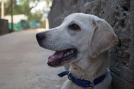
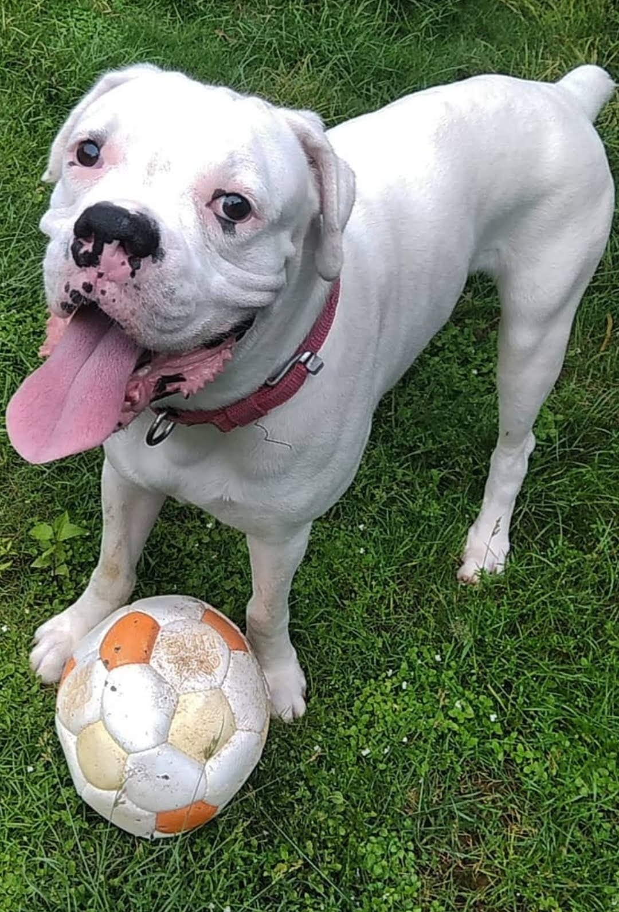

Rinky
This complete guide to buying, raising and training a Labrador Retriever puppy will help you to choose and raise the perfect family pet.
Here you can find out the best way to buy a puppy, how to feed and potty train your puppy and how to keep him healthy.
We answer your questions on growth, weight, biting, socialization and much more.
We also have a fantastic community and support network of Labrador puppy parents

Weiss
The Boxer is a medium to large, short-haired breed of dog, developed in Germany. The coat is smooth and tight-fitting; colors are fawn, brindled, or white, with or without white markings. Wikipedia
Life expectancy: 10 – 12 years
Origin: Germany
Temperament: Intelligent, Playful, Devoted, Fearless, Friendly, Energetic, Cheerful, Loyal, Confident, Bright, Calm, Brave
Colors: White, Brindle, Fawn
Height: Female: 53–60 cm, Male: 57–63 cm
Weight: Female: 25–29 kg, Male: 27–32 kg